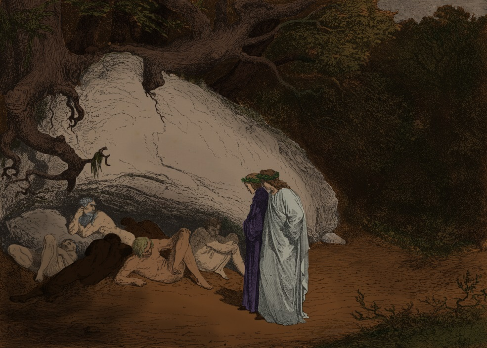
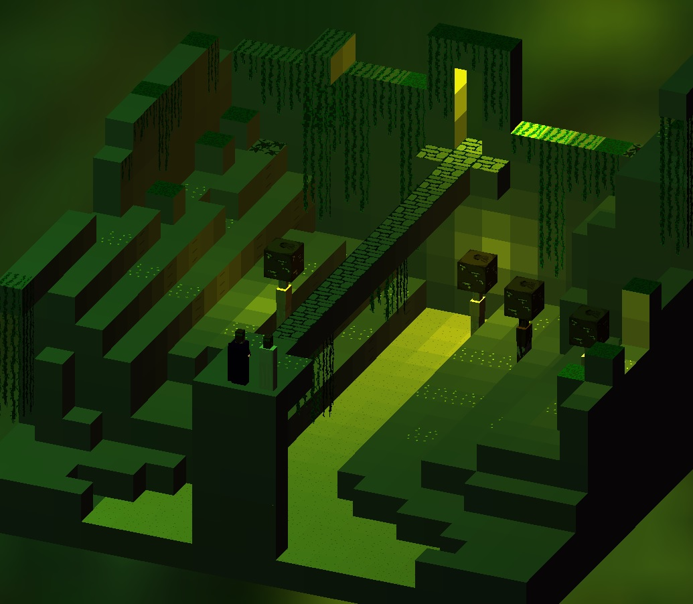

The ForestLike the poem, the game starts with Dante being lost in a deep forest. The game starts out by Sokoban-style boxpushing mechanics, and has the player learn the rules of physics of the game, as well as how to control the camera and how to use the undo-button.
The style in this part is generally bright and takes place outside, the music is calm and relaxing. This section ends by Dante and Virgil opening passing through the gate to Hell. |
|
|
 |
|
Vestibule of HellBefore Dante and Virgil enters Hell proper they pass through the vestibule of hell.
Here the player learns more about how gravity works, and how you can carry boxes on top of your head. The puzzles are a bit more tricky than in the forest.
The vestibule lies underground, but there are still trees, dirt, and some light from outside. Dante and Virgil meet Charon who takes them across the first river of Hell and to the first circle.
|
The first Circle - Limbo
According to Dante, Limbo is inhabited by the souls who in life picked neither the side of good nor evil, as well as unbaptized babies and people who lived before christianity.
This first circle of hell also has trees and fresh green meadows - here Dante and Virgil talks to old Greek and Roman philosophers.
The music is mysterious and slow, and the lights are greenish. In this section the player learns how to manipulate ladders, and blocks that have ladders attached.
|
|
 |
|
|
The Circle of Lust
This circle contains the souls of the lustful who "reason subjugated to appetite".
Here Dante and Virgil meet Cleopatra, Tristan, Helen of Troy, and they listen to Francescas sad story of love.
These souls of this circle are forever thrown around in a hurricane. This circle has a blueish purple theme, with storms and rain.
This circle introduces the locks-and-keys mechanics. |
The Circle of Gluttony
The circle of Gluttony goes in brown and yellow, it is full of dirt, mud, rain and hail. The gluttons lie in the mud turning themselves around, their punishment for a life of excess.
In this section Dante can first interact with the inhabitants of hell - pushing a glutton makes him continue moving in the same direction until he hits a wall.
|
 |
|
|
 |
The Circle of Greed
Here lives the avaricious and the spendthrifts - like Sisyphous they push huge bags of money around.
This circle introduces "walkers" - souls that move in according to a simple movement pattern that the player can manipulate.
The Circle goes in green and yellow lighting and has a relaxing but eerie music theme.
|
The Circle of Wrath
In this section Dante and Virgil has to cross the swampy river Styx. Just below the surface lies the wrathful, forever gurgling their throats.
This section is very dark, and the music is creepy and oppressive. The mechanics are centered around lights. The player has to carry them around, and combine lights of different colors
to break light-sensitive blocks.
|
|
|
|
|
The Circle of Heresy
Heretics are those that rejected Christianity. Here reside Greeks like Epicurus, and Anastasius II the heretical Pope.
The heretics are standing in flaming tombs, forever being burned for their sin. Since the circle of Heresy lies inside Dis - the city of hell - the levels has rampars, walls and towers.
The music is dark and mysterious, but gentle compared to the last circle. The circle of heresy has many classical puzzles implemented in the game engine
- a sliding square puzzle, the towers of Hanoi, a tetris-puzzle, drawing an Euler-path in a graph and more.
|
The Circle of Violence
According to Dante there are three types of violence: against your neighbour, agains yourself, and against God. This circle is divided accordingly.
The first round contains Pflegethon, the river of boiling blood. Beyond lies a dark forest where people are turned into trees, after which comes a desert with raining fire.
The mechanic in this Circle is cooperative play - Virgil will help you out and you can switch between two characters to solve puzzles together. |
|
|
|
|
The Circle of Fraud
Dante and Virgil enter "Malebolge", the evil ditches of the Circle of Fraud. Here different types of fraudsters are punished in different ways, each according to his crime.
This circle is fiery red with a very intense soundtrack. The mechanic is based around a sand-rock blocktype which breaks when Dante pushes it.
|
The Well of Giants
Between the circles of fraud and treachery lies the Well of Giants. Here three Giants are forever chained for their rebellion against God.
In this short section Dante and Virgil has to climb and manipulate the Giants to solve puzzles. The well is stone-colored with turquoise lighting and water running down the walls.
|
|
|
|
|
The Circle of Treachery
This deepest circle of hell is covered in ice, with cold winds blowing from inside. Here sinners who committed different kinds of teacerhy are frozen solid inside the ice, the tears forever freezing on their faces.
This last circle combines all the mechanics from the previous circles. Many puzzles are based on breakable ice-blocks together with walkers, allowing you to carve out paths for the walkers and construct mechanical circuits.
|